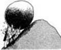

DR. S.B. DANDIN, Director
CSR & TI, Mysore
MULBERRY SILKWORM DATA COMPILATION
DR. RAVINDRA SINGH, Deputy Director
DR. R.K. MISHRA, Senior Research Officer
SRI. V. GANESAN, Assistant Director
TROPICAL TASAR SILKWORM DATA COMPILATION
DR. B.R.R.P. SINHA, Director
DR. A.K. SRIVASTAVA, Senior Research Officer
CTR & TI, Ranchi
OAK TASAR SILKWORM DATA COMPILATION
DR. N. IBOHAL SINGH, Deputy Director
Ms. L. BIVYAWATI, Senior Research Officer
SRI. L. SOMEN SINGH, Senior Research Officer
RTRS, Imphal
ERI & MUGA SILKWORM DATA COMPILATION
DR. N. SURYANARAYANA, Director
DR. J.C.D. PHUKAN, Senior Research Officer
DR. M.C. SHARMA, Senior Research Officer
Ms. MONALISA DATTA, Research Fellow
CMER & TI, Jorhat
DATABASE DESIGN, TECHNICAL COMPILATION & DIGITIZATION
VIDEO CLIPPINGS
DR. H. Basker, IAS, C.E.O. & Member Secretary,
Central Silk Board, Bangalore
Dr. J.R.B. ALFRED, Director,
DR. RAMAKRISHNA, Joint Director
Zoological Survey of India, Kolkata
The Director, CSGRC, Hosur
The Director, CSR & TI, Berhampur
The Director, KSSRDI, Bangalore
The Director, APSSRDI, Hindupur
DR.K.N. GANESHAIAH, Professor
GKVK, UAS, Bangalore
FINANCIAL SUPPORT
Dept. of Bio-Technology, Govt. of India,
New Delhi